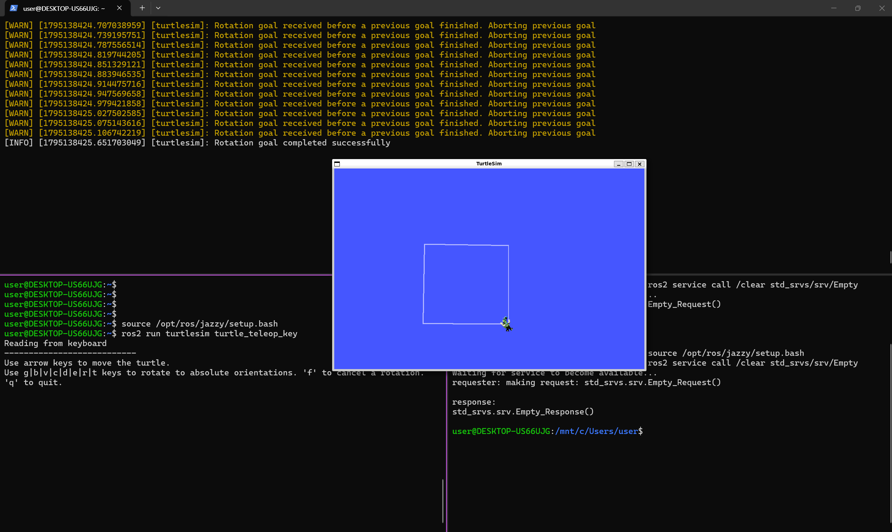

ROS 2 기초 정리 (Jazzy & Turtlesim)
한 줄 요약: 하나의 거대한 프로그램 대신 각자 역할을 맡은Node들이Topic,Service,Parameter,Action으로 통신하며 시뮬레이터(turtlesim,Isaac Sim)에서 실제 로봇(Nav2,MoveIt 2,ros2_control)까지 일관되게 제어할 수 있게 해주는 오픈 소스 로봇 개발 프레임워크입니다.
1. ROS 2란 무엇인가?
- 운영체제(OS)가 아니라 로봇 애플리케이션 개발을 돕는 오픈 소스 프레임워크입니다.
- 로봇 시스템 내부 및 여러 장치·로봇 간 메시징, 표준 인터페이스, 멀티 언어(
rclcppC++,rclpyPython), 멀티 플랫폼을 지원합니다. - ROS 1 대비 핵심 변화: 중앙
Master노드 없이 DDS 기반 자동 탐색을 사용하고, QoS 설정으로 신뢰성·지연을 조절하며, 멀티 로봇·현장·제품화 단계까지 확장하도록 설계되었습니다.
| 구분 | ROS 1 | ROS 2 |
| 중심 서버 | Master 필요 (꺼지면 통신 마비) | 중앙 서버 없음 (DDS 기반 자동 탐색) |
| 통신 품질 조절 | 제한적 | QoS 옵션으로 신뢰성·지연 등 제어 |
| 멀티 로봇·확장 | 설정 까다로움 / 연구·시제품 중심 | 여러 로봇·장치 연동 및 제품·양산 지향 |
2. ROS 2 생태계 및 대표 패키지
- 생태계 계층:
① OS·HW(Ubuntu, 센서·모터)→② 통신 기반(DDS)→③ 클라이언트 라이브러리(rclcpp, rclpy)→④ 핵심 개념(Node, Topic, Service, Parameter, Action)→⑤ 도구·패키지→⑥ 응용(실제 로봇·시스템). - 대표 패키지:
Nav2: 지도 작성(SLAM), 위치 인식, 경로 계획, 장애물 회피 기반 자율주행MoveIt 2: 로봇팔 움직임 계획 및 물건 집기·조립ros2_control: 모터·관절 등 하드웨어를 일관된 방식으로 제어하는 프레임워크micro-ROS: 소형 마이크로컨트롤러(MCU)와 ROS 2 연동Open-RMF: 서로 다른 제조사의 로봇과 엘리베이터·문 등 시설 연동 및 교통 정리Autoware: ROS 2 기반 오픈소스 자율주행 소프트웨어
3. 설치 및 환경 세팅 (Ubuntu 24.04 / Jazzy)
- 배포판 매칭: Ubuntu
24.04→ROS 2 Jazzy Jalisco(LTS), Ubuntu26.04→ROS 2 Lyrical Luth. - 필수 세팅:
lsb_release -a로24.04(noble) 확인UTF-8로케일(en_US.UTF-8) 설정- ROS 2 저장소 등록 후
ros-jazzy-desktop,ros-dev-tools설치 - 새 터미널마다
source /opt/ros/jazzy/setup.bash적용 (또는~/.bashrc에 등록)
4. ROS 2 Graph 핵심 5대 요소
① Node (노드)
- 하나의 독립된 기능을 담당하는 실행 단위(예:
/turtlesim,/teleop_turtle). -ros-args --remap __node:=my_turtle로 노드 이름을 바꿀 수 있습니다.- 주요 CLI:
ros2 node list,ros2 node info <node_name>.
② Topic (토픽)
- 단방향 연속 스트리밍(Publish–Subscribe) 통신. 응답이 없으며 주기적·연속적 데이터에 적합합니다.
- 좌표계 기준:
linear.x는 전진(>0)/후진(<0),angular.z는 반시계(>0)/시계(<0) 회전 속도(rad/s). - 주요 토픽:
/turtle1/cmd_vel(geometry_msgs/msg/Twist),/turtle1/pose(turtlesim/msg/Pose),/turtle1/color_sensor(turtlesim/msg/Color). - 주요 CLI:
ros2 topic list -t,ros2 topic echo <topic_name>,ros2 topic info <topic_name> --verbose,ros2 topic pub.
③ Service (서비스)
- 단발성 요청–응답(Request–Response) 통신. 필요할 때 한 번 호출하고 결과를 받습니다.
- 주요 서비스:
/clear,/reset,/spawn(turtlesim/srv/Spawn),/turtle1/set_pen,/turtle1/teleport_absolute, 및 노드별 파라미터 서비스 7종. - 주요 CLI:
ros2 service list,ros2 service type <service_name>,ros2 interface show <service_type>,ros2 service call.
④ Parameter (파라미터)
- 노드의 설정 값(정수, 실수, 불리언, 문자열, 리스트 등)을 런타임에 읽고 바꾸는 기능.
ros2 param set변경은 재시작 시 유지되지 않으므로ros2 param dump로.yaml파일로 저장하고ros2 param load또는-params-file로 불러옵니다.- 주요 CLI:
ros2 param list,ros2 param get,ros2 param set,ros2 param dump,ros2 param load.
⑤ Action (액션)
- 목표(Goal) → 중간 피드백(Feedback) → 최종 결과(Result)로 이어지는 장시간 작업 통신. 중간에 취소(Cancel)하거나 새 목표로 선점(Abort)할 수 있습니다.
- 주요 액션:
/turtle1/rotate_absolute(turtlesim/action/RotateAbsolute) —turtle_teleop_key에서g, b, v, c, d, e, r, t키로 호출하고f키로 취소 가능. - 주요 CLI:
ros2 action list,ros2 action type <action_name>,ros2 action info <action_name>,ros2 action send_goal.
5. 통신 방식 한눈에 비교
| 구분 | 방향·모델 | 특징 | 대표 활용 예 |
| Topic | 단방향 (Pub → Sub) | 지속적 스트리밍, 응답 없음 | 속도 명령(/cmd_vel), 로봇 위치(/pose), 센서 데이터 |
| Service | 양방향 (Client ↔ Server) | 1회 요청·응답, 즉시 처리 | 캔버스 초기화(/clear), 개체 생성(/spawn) |
| Parameter | 노드 설정값 조회·변경 | YAML 저장·로드 가능 | 배경 RGB(background_r/g/b), 속도 배율 |
| Action | 목표·피드백·결과 비동기 제어 | 진행률 피드백, 취소·선점 지원 | 절대 각도 회전(/rotate_absolute), 이동·파지 작업 |
터틀봇 그리기 실행
